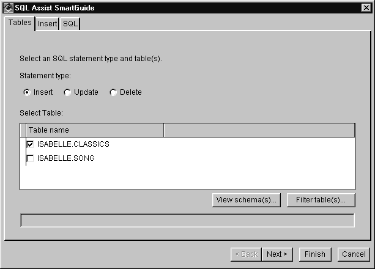
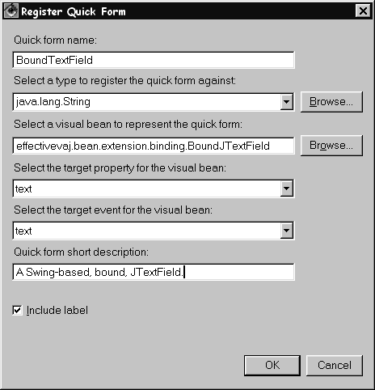

Effective VisualAge for Java: Errata
 Effective VisualAge for Java, Version 3
Effective VisualAge for Java, Version 3
by Scott Stanchfield and Isabelle Mauny
ISBN: 0-471-31730-6
If you find any problems with the book that are not listed here, please email Scott Stanchfield at scott@javadude.com.
Example Code Corrections and Missing Code
Some of the example code mentioned in the book was accidentally omitted from the CD ROM. You can obtain the code by downloading corrections.zip. Many apologies for the omission! There is also an example with code that is incorrect.
Unzip corrections.zip, which will extract repository file corrections.dat. You can import this into VisualAge for Java using a repository format import:
- Choose the File->Import menu option.
- Pick Repository when asked for the import source.
- Press Next.
- Choose Local Repository and pick the debug.dat file you extracted.
- Choose Projects and press the Details button next to it.
- Check the Effective VisualAge for Java Missing Code project (the only one in the file).
- Press Finish to perform the import.
- Choose Selected->Add->Project from the Workspace.
- Select Add projects from the repository.
- Choose the Effective VisualAge for Java Missing Code package.
- Press Finish.
You may want to move the packages to your original Effective VisualAge for Java project; it's up to you.
Book Errata and Updates
Page xix: Updated info for VisualAge for Java, Version 3.5.3
IBM has recently released an upgrade to VisualAge for Java, version 3.5.3. You can obtain this release from http://www.software.ibm.com/vadd. Version 3.5.3 is primarily a bug fix release, and all 3.5 content in this book applies to version 3.5.3.
To install version 3.5.3, you must first install version 3.5 from the CDROM that accompanies this book. See Appendix D, "About the CDROM" for installation instructions.
Page 149: Missing code on CDROM
This chapter references example code in package effectivevaj.env.debug. This package was omitted from the sample code included on the accompanying CDROM. You can obtain this missing code above.
Page 175: File name typo
In the note box at top of the page, the file name should read
C:\IBMDebug\help\en_US\debugger\concepts\cbwbrkpt.htm
Page 178/179: Missing code on CDROM
Package effectivevaj.ide.intro.beans was omitted from the CDROM. You can obtain it above.
Page 204:Code Sample Typo
Change
private transient PropertyChangeSupport
to
private transient PropertyChangeSupport pcs = new PropertyChangeSupport(this);
(Looks like it just got truncated in the printing. The code sample on the CDROM is correct.)
Page 206: Code sample Typo
Change
System.out.println("Nancy: " + scott.getPhoneNumber());
to
System.out.println("Nancy: " + nancy.getPhoneNumber());
in both places that it appears.
Note that the sample code for this example as included on the CDROM is also incorrect. A correction can be obtained above.
Page 418: Clarification
Before paragraph starting "Suppose that you design", please note the following.
You can easily add the mother and father properties to the Person bean through the BeanInfo editor. However, the resulting Person class will contain:
public class Person {
private Person mother = new Person();
private Person father = new Person();
// ...get & set methods...
}
Looking at the above code exposes an important problem: whenever you create an instance of Person, two more Person objects are instantiated, which in turn create two more Person objects, which in turn create two more Person objects, and so on...
The process is infinite.
This is a problem with the code generated by the BeanInfo editor. If you attempt
to add this Person bean in the VCE, it will seem to hang for quite a while,
finally giving you a StackOverFlowException.
To solve this problem, you need to remove the "= new Person()" from the mother and father instance variable definitions. The resulting Person class should look like
public class Person {
private Person mother;
private Person father;
// ...get & set methods...
}
Page 640: Incorrect Figure
Figure 21.6 should look as follows

Page 645: Incorrect Figure
Figure 21.9 should look as follows

Page 690: Clarification
The following should help clarify the first few paragraphs on the page.
Before you can register a remote object in the RMI registry, you need to make sure the registry can see the remote object and stub classes. The RMI registry runs as a "system program", and uses the Workspace Classpath to find classes it needs.
To set up the workspace classpath, go to Window->Options->Resources and add
<installdir>/ide/project_resources/Effective VisualAge for Java
to the workspace classpath
Note
<installdir> is the directory in which you installed VisualAge for
Java For 3.5, the default for this on Windows is c:\Program Files\IBM\VisualAge
For Java. If you're using another project, put that project's name in place
of "Effective VisualAge for Java" in the path. This allows
"system programs", such as RMI registry, to find your class.
Next you will need to restart the RMI registry.
Page 736: Sample code typo
Change
primakey key (ID))
to
primary key (ID))
Page 761: Omitted sample code
The code on this page uses a class called UtilityClass, which was omitted from the CDROM. You can obtain this class above.
Page 780: Clarification for VisualAge for Java Version 3.5 and above
Note that the Servlet Launcher exists in VisualAge for Java, Version 3.02 but was removed from VisualAge for Java, Version 3.5. To test your servlet, you must invoke it from a web browser by typing in the URL of the servlet. See "Calling a Servlet from an HTML Page" on page 782.
Page 908: Update for VisualAge for Java, Version 3.5.3
Note that IBM has recently released an upgrade to VisualAge for Java, version 3.5.3. You can obtain this release from http://www.software.ibm.com/vadd. Version 3.5.3 is primarily a bug fix release, and all 3.5 content in this book applies to version 3.5.3.
Note that to install version 3.5.3, you must first install version 3.5 from the CDROM that accompanies this book.
Page 909: Note on VA Assist versions
The version of VA Assist/J included on the CDROM will only work with VisualAge for Java version 3.5. If you upgrade to VisualAge for Java, Version 3.5.3 (which we strongly recommend), you must download a newer version of VA Assist/J Preview from http://www.instantiations.com. VA Assist/J Preview is a free product for VisualAge for Java, Professional Edition. If you're interested in VA Assist for VisualAge for Java, Enterprise Edition, you should contact the sales department at Instantiations (info is available on their web site.)
Page 917: Update on book mailing lists
The book mailing lists are no longer available.
Page 917: Update on removed book content
Due to limitations in the size of this book, some content was removed from chapter 19. Be sure to visit http://www.javadude.com/vaj and read the "Understanding the Generated Code" section. This is a detailed description of how VisualAge for Java generates code for visual compositions, SmartGuides, and the BeanInfo editor.
Copyright © 1996-2014, Scott Stanchfield. All Rights Reserved.
Contact me at scott@javadude.com
JavaDude.com Home
Rounded-corner figures based on "More Snazzy Borders" by
Stu Nicholls
 Want
to hear about new stuff at JavaDude.com? Use this RSS Feed!
Want
to hear about new stuff at JavaDude.com? Use this RSS Feed!